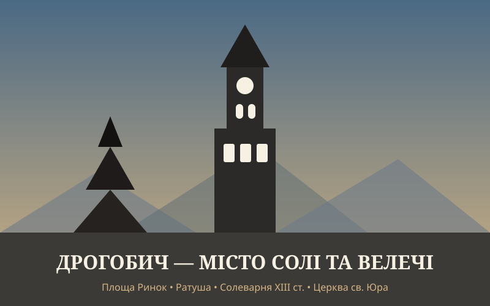

1. Дрогобич (Україна)

Старовинне галицьке місто солі, величних костелів, унікальної дерев'яної церкви Святого Юра та затишної європейської атмосфери.
Авторський блог про міста з унікальною історією, архітектурою та неповторним характером.
У кожного з нас є куточки світу, які залишають особливий відбиток у серці: одні вражають багатовіковим затишком і автентикою, другі — величчю та енергією мегаполіса, а треті — футуристичним поєднанням високих технологій і традицій. У цьому блозі зібрано мою персональну трійку міст, кожне з яких має свою душу.

Старовинне галицьке місто солі, величних костелів, унікальної дерев'яної церкви Святого Юра та затишної європейської атмосфери.

Місто вікової могутності, зелених схилів Дніпра, золотих куполів Софії й Лаври та незламного сучасного ритму.

Глобальний мегаполіс майбутнього, де кіберпанковий неон Сібуї й Акіхабари гармонійно межує з багатовіковими садами та спокоєм святинь.